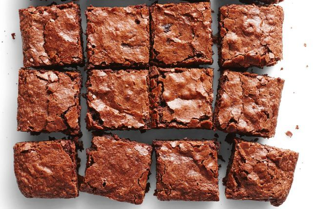

Brownies Recipe

Description
Brownies get better with age, so always try to make them a day ahead. Let them cool completely in the pan – they are very soft when hot and can break easily.
Ingredients
- 125g unsalted butter, chopped
- 125g CADBURY Baking Dark Chocolate, chopped
- 3 eggs, lightly whisked
- 335g (1 1/2 cups) white sugar
- 115g (3/4 cup) plain flour
- 30g (1/4 cup) Dutch cocoa powder
- 1 tsp vanilla extract
- Pinch of salt
Steps:
- Preheat oven to 180C/160C fan forced. Grease a 20cm (base measurement) square cake pan and line with baking paper.
- Place butter and chocolate in a heatproof bowl over a saucepan of simmering water (don't let the bowl touch the water). Stir with a metal spoon until melted. Remove from heat. Quickly stir in egg, sugar, flour, cocoa powder, vanilla and salt until just combined. Pour into prepared pan. Bake for 30 minutes or until a skewer inserted in the centre comes out with moist crumbs clinging. Set aside to cool completely.